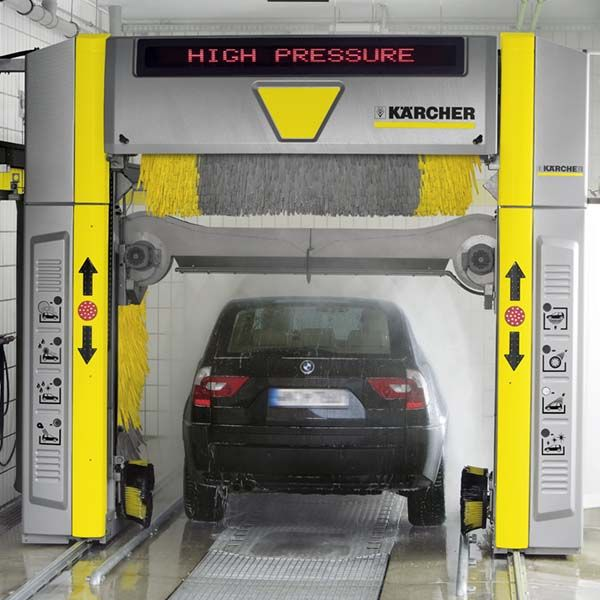
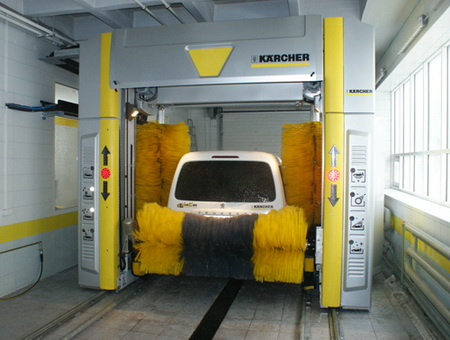
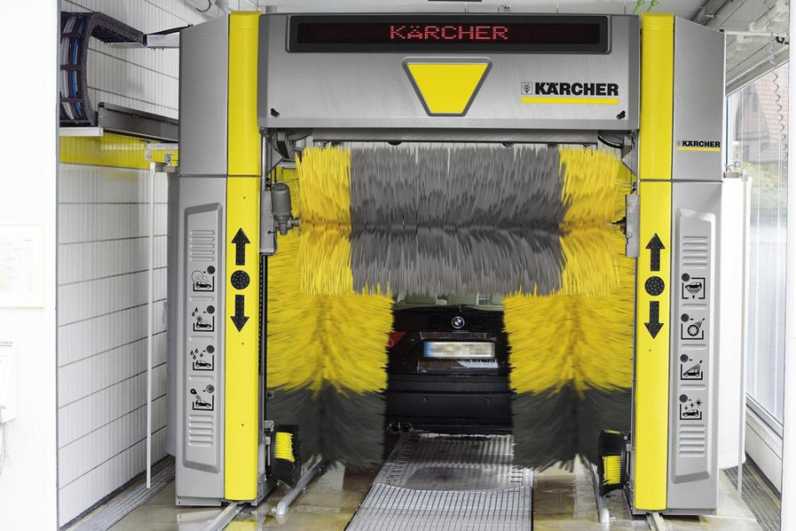

Свое название портальные автомойки получили благодаря основному элементу конструкции - П-образному порталу. Современная портальная мойка уже в минимальной комплектации снабжена двумя боковыми и одной крышной щеткой, оборудованием для нанесения моющих и защитных средств, системой подачи воды, агрегатами сушки.
Заезжая на портальную мойку, автомобиль занимает определенное положение относительно портала мойки - позиционируется. Портал, после включения соответствующей программы мойки, совершает несколько возвратно-поступательных ходов вдоль автомобиля. Количество ходов портала зависит от выбранной клиентом программы. Процесс автоматической мойки строится на командах электронного блока управления, который тщательно следит за согласованностью действий всего комплекса вспомогательных систем и агрегатов.
Общая последовательность операций такова:
обязательная предварительная подготовка кузова ручной мойкой под высоким давлением;
нанесение активной пены (раствора очистителя);
мойка кузова щетками с раствором шампуня;
мойка водой под высоким давлением по контуру кузова;
ополаскивание свежей водой;
нанесение горячего воска (осушителя) или пенного воска;
полировка кузова;
сушка (обдув) воздухом.
У многих водителей вопрос оператора автоматической мойки о том, нужно ли обрабатывать кузов его автомобиля жидким воском, вызывает легкое замешательство: «а действительно, надо или нет, да и что это за жидкий воск такой?»
По своему составу жидкие воски представляют собой смесь катионных ПАВ, растворителей, спиртов и алифатических углеводородов. При обработке автомобильного кузова жидким воском состав глубоко проникает во все поры и микротрещины лакокрасочного покрытия, вытесняя из них влагу и придавая обработанной поверхности гидрофобные свойства.
Различают следующие виды жидких восков: «холодные», «горячие» и «пенные». «Холодные воски» применяют для улучшения качества сушки. Включенные в их состав ПАВ(ы), значительно снижают поверхностное натяжение воды. При смешивании «холодных восков» с водой, полученный состав уже не растекается тонкой пленкой по лакокрасочному покрытию автомобиля, а собирается в капли, которые легко сдуваются направленным воздушным потоком.
Составы «горячих» и «пенных» восков применяют для антикоррозионной защиты кузова, для усиления блеска лакокрасочного покрытия автомобиля и для создания на нем грязеотталкивающего слоя. Так же, как и «холодные», «горячие» воски растворяют в воде, при нанесении на кузов автомобиля рабочая температура раствора может достигать +60-70 °С, при этом важно помнить, что температурный градиент (разница в температурах лака автомобиля и раствора) не должен превышать 20 °С. Для консервации автомобильного кузова вместо «горячих» восков можно использовать и «пенные». В этом случае практический эффект от применения «пенных» восков будет даже лучше, но для нанесения и полировки автомобильного кузова такими восками требуется проведение специальных технологических операций.
Портальные мойки могут быть доукомплектованы автоматическим мойщиком колесных дисков и мойщиком днища.
Блок мойки колесных дисков представляет собой две тарельчатые щетки с полиэтиленовым ворсом. Функция создания потоков высокого давления опциональна. Тарельчатые щетки, вращаясь попеременно то в одну, то в другую сторону, хорошо смывают грязь с колесных дисков и колпаков различной конструкции. Мойщик днища - это целая батарея форсунок направленного действия, расположенных таким образом, чтобы бьющие из них струи воды могли справиться с грязью, прилипшей к автомобильному днищу и застрявшей во внутренних полостях колесных арок.
В зависимости от выбранной программы и количества дополнительного оборудования портальная мойка с тремя щетками способна вымыть и высушить кузов легкового автомобиля за 3,5 - максимум за 10 минут.
Наряду с трехщеточными можно встретить двухпортальные мойки с четырьмя щетками (правда, реже): двумя крышными и двумя боковыми, а также шестью агрегатами сушки. Благодаря большему числу щеток удается сократить время, необходимое для мойки автомобиля, до 2,5-5 минут.
Наномойка Антидождь Инновационный автошампунь Полировка «Жидкое стекло»